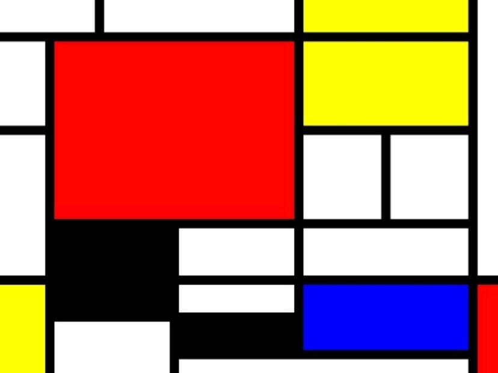

This website Fruitful Presentation created by Min Guhong is very interesting. The author create the website as if it’s a slide show. In each of the slides or webpage there’s a message that’s left for the audience, sometimes there’s even links and scrolling in a line required. I really wonder if each webpage is separated or is it together but just uses a button to proceed to the next page. I agree with the author of how each tag and language of coding. Especially about HTML and CSS is the base of web production, the author use the example of pyramid to compare if without HTML and CSS the pyramid will not be able to build up. This website remind me of the Mondrain artwork. They both uses basic color to create the artwork. The website use basic color of yellow and green to present a slideshow like website, and the Mondrain artwork uses the similar concept of using basic color and parallagram to create a geometric artwork.
